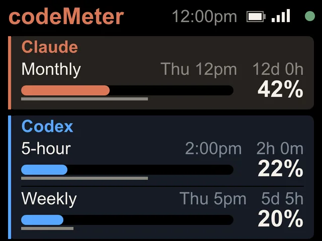

Claude Team
Claude Team, by the month.
Team plans report a monthly limit instead of a weekly one. codeMeter shows it with a forecast of where you will finish the month.


On the screen
Monthly, with a forecast.
- USAGE / MONTHLYThe percent of your monthly limit used, with a bar and a line for how far into the month you are.
- RESETSThe reset date and a countdown, like Nov 12 in 12d 0h.
- PACEA straight-line forecast: On track to use 69%. If the forecast passes 100%, it reads Over pace in amber. It waits until 10% of the period has passed before forecasting.
- PLANWithin base quota or Monthly usage, in plain words. Drawing from the monthly pool is normal, so it is not shown as an alarm.
Try it
Where will the month end?
Two accounts
Work and personal, side by side.
Choose 2 Claude accounts and each shows the limits its own plan has.


Set up
Same token, any plan.
Run claude setup-token while signed in to your Team account.
- 1Plug it in
Join the
codeMeter-XXXXXXWi-Fi from your phone. The setup page opens (or visithttp://192.168.4.1). - 2Get your token
On a computer with the Claude CLI, run
claude setup-token. It opens a browser to sign in, then prints a long token. - 3Paste and save
Tap Setup Device, pick Claude Code, paste the token (or scan the QR from the pairing page), choose your home Wi-Fi and Save.
FAQ
Questions.
Does codeMeter work with Claude Team?
Yes. Team accounts report a monthly limit, so codeMeter shows the monthly percent, when it resets, and where you are heading by the end of the period.
How is the month-end forecast worked out?
It divides the percent used by how much of the month has passed, a straight line. It starts once 10% of the period has gone, so day one does not throw wild numbers.
Can every person on the team have one?
Yes. Each person signs in with their own token. For a group order with your logo on the start-up screen, see the team rollout guide.
Does checking use up my Claude limit?
Each check is one tiny request on Anthropic's cheapest model, once a minute. It is a negligible slice of your allowance.
What do I need?
A paid plan for each account you show (Claude Pro, Max, Team or Enterprise, or a ChatGPT plan with Codex), 2.4 GHz Wi-Fi with a WPA2 password, and, for Claude, a computer once per account to run claude setup-token.